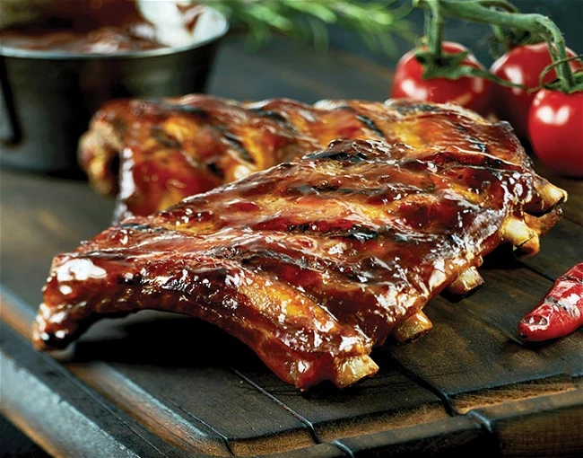

Bill's Smoked BBQ Baby Back Ribs

Baby Back Ribs
These are to-die-for ribs you will want to serve to guests, to show off your cooking ability.
Baby back ribs are tender, and the meat falls right off the bone. Generally, people think of baby back ribs as a meal they would only order at a restaurant, but they are so easy to make at home. This recipe could not be more simple.
Ingredients
- 5 pounds baby back pork ribs
- ½ gallon apple juice
- 1 head garlic, separated into cloves
- 1 tablespoon granulated garlic
- 2 cups barbeque sauce
Steps
- Prepare charcoal in a smoker, and bring the temperature to 225 degrees F (110 degrees C).
- Cut the ribs into smaller portions of 3 or 4 ribs, and place them in a large pot. Pour in enough apple juice to cover. Place a lid on the pot and bring to a boil. Remove from the heat, and let stand for 15 minutes.
- Lightly oil the grate in your smoker. Place ribs on the grate, and throw a few cloves of garlic onto the hot coals. Close the smoker. Maintain the temperature at 225 degrees F (110 degrees C) by adding more charcoal as needed. Smoke the ribs for 7 hours, adding more garlic cloves to the coals occasionally.
- Make a sauce by mixing together the barbeque sauce with 2 cups of the apple juice from the pot. Season with granulated garlic. Baste ribs with this sauce while continuing to cook for another 30 minutes.